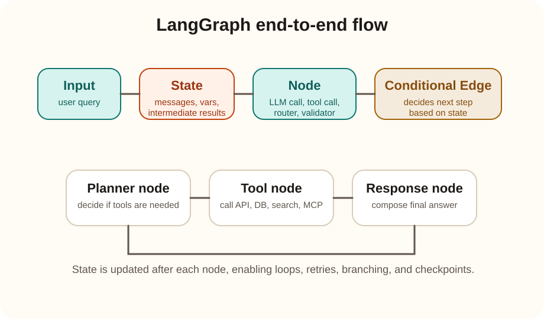

Systems track
LangGraph end to end
LangGraph is a framework for building agent workflows as graphs. Instead of one prompt calling one tool and returning one answer, you define nodes, shared state, and edges that control how the agent moves from planning to tools to validation to final response.
The simplest mental model is: LangGraph is for stateful, multi-step agent execution. It helps when the agent must branch, retry, loop, or coordinate multiple tools instead of doing a single straight-line call.
Core flow
input -> state -> node -> edge -> next node -> final output
What problem it solves
Simple agent loops become messy when you need controlled multi-step reasoning, tool retries, conditional routing, memory, human approval, or checkpointing. LangGraph makes those control flows explicit.
What it is not
It is not just a tool list and it is not just prompt chaining. It is a workflow engine for agent logic where the graph structure controls how execution progresses.
Building blocks
Core components involved
| Component | What it means | Why it matters |
|---|---|---|
| State | Shared data passed through the workflow. | Keeps messages, tool outputs, plan steps, and intermediate decisions together. |
| Node | A unit of work such as an LLM call, tool call, router, or validator. | Lets you separate planning, action, checking, and response generation. |
| Edge | A connection between nodes. | Defines execution order. |
| Conditional edge | A route chosen based on current state. | Enables branching such as "call tool" versus "answer directly". |
| Checkpointing | Saving workflow state between steps. | Supports resume, debugging, long-running tasks, and human-in-the-loop flows. |
| Tool node | A node that invokes external tools. | Connects the graph to APIs, databases, search, or even MCP servers. |

1. User input enters the graph
The graph starts with an initial state, often containing messages, metadata, and task context.
2. A planner or router node runs
This node decides whether the request can be answered directly, needs tools, needs clarification, or should branch into another workflow.
3. Tool nodes or reasoning nodes execute
The graph may call APIs, run retrieval, query a database, invoke MCP tools, or use additional LLM steps.
4. State is updated after each node
Tool outputs and intermediate reasoning are stored in the shared state so later nodes can use them.
5. Conditional edges decide what happens next
If a tool fails, the graph can retry. If data is missing, it can ask a follow-up question. If enough information is available, it can move to answer generation.
6. Final response node returns the answer
The agent uses accumulated context from the full graph execution to produce the final response.
Concrete example
End-to-end LangGraph example: sales analysis agent
User asks: "Analyze last month sales, tell me the top weak regions, and recommend three actions."
Node 1: planner
The planner inspects the request and decides it needs structured data, summary logic, and recommendation logic.
Node 2: fetch sales data
A tool node calls a backend or MCP-exposed tool such as get_sales_data.
Node 3: validate completeness
A validator checks whether all expected regions are present. If not, the graph can branch to retry or ask for narrower scope.
Node 4: summarize trends
An LLM node or analytics node creates a structured summary of weak regions, growth drops, and anomalies.
Node 5: recommendation engine
Another node converts the analysis into operational recommendations such as pricing corrections, stock actions, or sales-force focus areas.
Node 6: final response
The final node formats the result into a concise answer for the user with evidence and recommendations.
What the graph gives you here
state = {
"user_query": "Analyze last month sales...",
"sales_data": ...,
"validation_status": "ok",
"trend_summary": ...,
"recommendations": ...
}
planner -> fetch_sales_data -> validate_data
if invalid -> retry_or_clarify
if valid -> summarize_trends -> recommend_actions -> respond
Practical comparison
Is LangGraph similar to React agent tool orchestration?
| Question | Answer |
|---|---|
| If my React agent already has tools and tool descriptions, is that similar? | Yes, conceptually. Both setups let the model choose tools and call backend logic. |
| So what does LangGraph add? | LangGraph adds explicit workflow structure: shared state, graph nodes, conditional branching, loops, retries, checkpoints, and more disciplined control over multi-step execution. |
| What is the main difference? | A React tool setup is often an agent plus a tool list. LangGraph is an orchestration engine for the whole multi-step reasoning workflow. |
React-style tool orchestration is enough when
- You have a small set of tools.
- The workflow is mostly straight line.
- You do not need complex branching or checkpointing.
- You want low setup overhead.
LangGraph wins when
- You need multiple dependent steps with clear routing.
- You want retries, fallbacks, or validation loops.
- You need persistent state across an execution.
- You want an auditable, debuggable workflow instead of implicit agent behavior.
Which one wins?
Neither wins universally. If your React agent setup is simple and works well, LangGraph may be unnecessary overhead. But if your agent is becoming messy because of branching logic, multi-tool dependency chains, retries, or long-lived state, LangGraph usually wins by making execution explicit and maintainable.
A good way to say it is: tool orchestration is a pattern; LangGraph is a workflow framework for that pattern.
Interview readiness
Questionnaire and scenarios
Why use a graph instead of a simple agent loop?
Because real agent workflows often need branching, retries, validation, checkpoints, and explicit state management. A graph makes those transitions controllable and debuggable.
What is the main role of shared state in LangGraph?
Shared state carries the evolving task context across nodes, so planning outputs, tool results, validations, and response drafts can all influence later steps.
Your agent needs to call three tools, verify output quality, and retry on failure. Why is LangGraph a good fit?
Because that is not just tool selection anymore. It is a controlled workflow with state, validation, branching, and retry logic, which is exactly what a graph structure expresses well.
An interviewer says, “This is just tool orchestration with extra ceremony.” What is a good reply?
At small scale that criticism can be fair. But once workflows need explicit branching, state transitions, observability, and resumability, the extra structure stops being ceremony and becomes operationally useful.